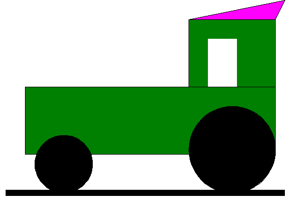
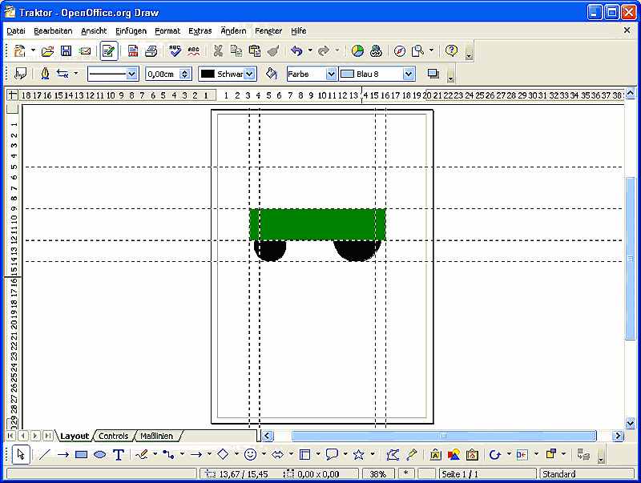

| [zurück] | [Hauptmenü] | [weiter] |
Erstellen einer einfachen Zeichnung
Abbildung 1: Ein kleines Beispiel, der Traktor
Im Folgenden soll zur Übung ein Traktor gezeichnet werden
- Betätigen Sie in der Symbolleiste "Zeichnen" die Schaltfläche "Ellipsen und Kreise" für die Räder. Der Mauszeiger wandelt sich in ein Kreuz mit Kreis daneben. Unter der Standard-Symbolleiste ist die Symbolleiste "Linien und Füllung", dort stellen Sie in der Dropdown-Box "Farbe" und in der nebenliegenden Farbauswahl-Box die Farbe "Schwarz" ein (für die Füllung des zu zeichnenden Kreises).
-
Nun wollen wir das kleine Vorderrad zeichnen. Die Position auf den Blatt ist zunächst nicht wichtig, da wir das Rad später auf seinen Platz verschieben werden.
Das Werkzeug "Ellipsen und Kreise" soll uns einen Kreis zeichnen. Dazu halten wir die Umschalt -Taste (oder auch Großschreibtaste) fest, klicken mit der Maus auf eine Position im Arbeitsblatt, halten die linke Maustaste fest und ziehen Sie diagonal nach rechts unten, bis wir einen Kreis von ca. 3 cm Durchmesser gezeichnet haben. -
Die Größe eines gezeichneten Objektes können wir jetzt noch über seine Eigenschaft genau einstellen.
Klicken Sie dazu mit der rechten Maustaste auf das Objekt - hier der Kreis - und wählen in dem darauf erscheinenden Kontextmenü den Punkt "Position und Größe...". Im folgenden Dialog wählen wir den Bereich "Größe". Dort sollten bei einem Kreis die Werte für "Breite" und "Höhe" gleich sein. Dann setzen wir bei "Abgleich" ein Häkchen. Ändern wir nun einen Wert in "Breite" oder "Höhe" ändert sich der Wert im anderen Feld analog, so daß wir immer einen Kreis beibehalten. Dort stellen wir also "3,00 cm" ein und beenden mit Klick auf OK. - Genauso verfahren wir nun mit dem größeren Hinterrad, nur daß wir dort eine Größe von "4,50 cm" für die Kreisgröße einstellen. Zeichenwerkzeug wählen, Umschalttaste festhalten und mit der Maus einen Kreis aufziehen. Danach über die Objekteigenschaften die Größe einstellen.
- Nun wollen wir die beiden Räder auf eine (unsichtbare) Ebene stellen. Dazu klicken wir oberhalb der Arbeitsblattes auf das horizontale Lineal und ziehen (bei festgehaltener linken Maustaste) eine Fanglinie ins Arbeitsblatt bis zu ca. 14 cm auf dem vertikalen Lineal. Die Mausposition wird immer auf den horizontalen/vertikelen Linealen in Form eines Striches angezeigt. Zusätzlich werden noch markierte (aktive) Objekte mittels Doppelstrichen angezeigt. Sollten Sie das Lineal in Ihrem Programmfenster nicht sehen, aktivieren Sie die Ansicht über Menü "Ansicht > Lineal". Um die Fanglinien anzuzeigen und "magnetisch" zu machen wählen Sie Menü "Ansicht > Führungslinien > Führunglinien sichtbar" und "An Führungslinien fangen" .
- Nachdem wir nun eine horizontale Fanglinie auf der Höhe 14 cm im Arbeitblatt eingerichtet haben, ziehen wir den kleinen Kreis nach Links, den großen Kreis nach Rechts auf die Fanglinie indem wir die Kreise mit der linke Maustaste anklicken und die Taste zum Verschieben festhalten. Lassen wir die Zeichnungsobjekte in der Nähe der Fanglinie los, scheint diese die Zeichenobjekte "anzuziehen" (einzufangen). Mit diesen horizontalen/vertikalen Fanglinien können wir also mehrere Objekte einfach in Beziehung zu einander anordnen. Vertikale Fanglinien zieht man übrigens analog zu den horizontalen aus dem vertikalen Lineal. Um Fanglinien zu verschieben bewegen sie die Maus über die Linie, bis sich der Mauszeiger in einen Doppelpfeil verwandelt, dann können Sie die Linie bei gehaltener linken Maustaste verschieben oder mit Rechtsklick einen Kontextmenü zu verschiedenen Bearbeitungsmöglichkeiten öffnen.
- Wir richten uns noch 3 weitere vertikale Fanglinien ein. Ziehen Sie jeweils eine Linie aus dem vertikalen Lineal auf Position 3 cm, 3,5 cm und 16 cm auf dem horizontalen Lineal. Desweiteren noch 3 horizontale Fanglinien bei 12, 8,5 und 5 cm auf dem vertikalen Lineal
- Nun verschieben wir das kleine Rad auf der horizontalen Fanglinie (14 cm) bis zur 2. vertikalen Fanglinie (3,5 cm)und legen es dort mit der linken Seite an. Da verschieben wir das große Rad bis zur letzen Fanglinie (16 cm) und legen es dort mit der rechten Seite an.
-
Nun zeichnen wir die Rechtecke mit dem dafür vorgesehenen Werkzeug
 . Klicken Sie das Werkzeug an, und ziehen Sie innerhalb der dafür vorgesehenen Fanglinien (horizontal 8,5/ vertikal 3 cm bis horizontal 12/ vertikal 16 cm) ein Rechteck auf. Füllen Sie die Fläche mit der Farbe "Grün" (Farbwahl-Box auf der Symbolleiste "Linie und Füllung" )
. Klicken Sie das Werkzeug an, und ziehen Sie innerhalb der dafür vorgesehenen Fanglinien (horizontal 8,5/ vertikal 3 cm bis horizontal 12/ vertikal 16 cm) ein Rechteck auf. Füllen Sie die Fläche mit der Farbe "Grün" (Farbwahl-Box auf der Symbolleiste "Linie und Füllung" )

Abbildung 2: Hilfslinien; Räder und Rumpf gezeichnet -
Nun ordnen wir die Räder vor den Rumpf. Dazu verwenden wir das Werkzeug "Anordnung"
 aus der Symbolleiste "Zeichnen". Klicken Sie nacheinander auf die Räder, dann das Symbol. Sollte dieses Symbol in der Zeichenleiste so nicht zu sehen sein, können Sie auf den Pfeil rechts neben "Anordnen" klicken und aus einer Vielzahl von Anordnungsmöglichkeiten das gezeigte Symbol auswählen.
aus der Symbolleiste "Zeichnen". Klicken Sie nacheinander auf die Räder, dann das Symbol. Sollte dieses Symbol in der Zeichenleiste so nicht zu sehen sein, können Sie auf den Pfeil rechts neben "Anordnen" klicken und aus einer Vielzahl von Anordnungsmöglichkeiten das gezeigte Symbol auswählen.
- Nun zeichnen wir das Führerhaus. Dazu benötigen wir noch eine vertikale Fanglinie, die wir bei 11,5 cm auf dem horizontalen Lineal einrichten. Dann das Zeichenwerkzeug für "Rechteck" anklicken und von horizontal 5 cm/vertikal 11,5 cm ein Rechteck aufziehen nach 8,5/16 cm. Rechteck füllen mit "Grün".
- Nun klicken wir auf eine freie Fläche um das markierte Rechteck zu demarkieren, klicken wieder auf das Zeichenwerkzeug "Rechteck" und zeichnen ein Fenster in das Führerhaus, Füllfarbe "Weiß". Dieses Fenster positionieren wir auf der horizontalen Fanglinie bei 9,5 cm, die anderen Parameter stellen wir ohne Fanglinien nach Gefühl ein. Sie können das markierte Rechteck an 8 Punkten verändern. Am Punkt in der Mitte einer jeden Seite des Rechtecks verändern Sie die Größe einer Seite des Rechtecks. Am Punkt in der Ecke verändern Sie die 2 anliegenen Seiten des Rechtecks. Wenn Sie beim Ziehen der Eckpunkte die Umschalt-Taste festhalten wird das Rechteck proportional geändert (also horizontal/vertikal in gleichem Verhältnis). Ohne die Taste können Sie das Objekt beliebig mit der Maus ändern.
- Das weiße Rechteck (Scheibe) hat einen dünnen schwarzen Rahmen. Den entfernen wir mit Rechtsklick auf das Objekt, wählen im Kontextmenü "Linie...". Dort im Register "Linie" wählen wir in der Auswahlbox "Stil" das Attribut "keine".
- Zum Schluß bekommt unser Traktor noch ein Dach. Wählen Sie hierzu das Werkzeug "gefülltes Polygon" aus. Leider ist es zunächst versteckt. Klicken Sie auf das Werkzeug Kurve und halten die Maustaste gedrückt. Ein kleines Menü mit verschiedenen Werkzeugen wird sich gleich öffnen, in dem Sie "gefülltes Polygon" auswählen können.
- Wir klicken nun auf dem Dach unseres Traktors den Schnittpunkt der Fanglinie 5/11,5 cm an, dann etwas höher hinter die letzte Fanglinie (16 cm). Auf das rechte, obere Eck des Führerhauses machen wir einen Doppelklick und unser Polygon (hier ein ungleichseitiges Dreieck) schließt sich von alleine. Wir füllen das Dach mit einer Farbe (im Beispiel Hellmagenta).
-
Zu Schluss wählen wir noch das Zeichenwerkzeug "Linie" . Zeichen Sie damit eine horizontale Linie unter die Räder. Durch das Festhalten der Umschalt-Taste können Sie nur Linien in Winkelschritten von 45° zeichnen, was das einfache Erstellen einer waagerechten Linie unterstützt.
Da das Werkzeug zunächst eine Haarlinie zeichnet, verwenden wir das Drehfeld "Linienstärke" auf der Symbolleiste "Linien und Füllung" um diese auf eine Stärke von 0,30 cm zu bringen. - Fertig! Wir haben unsere erste kleine Zeichnung mit OpenOffice-Draw 2.0 erstellt.